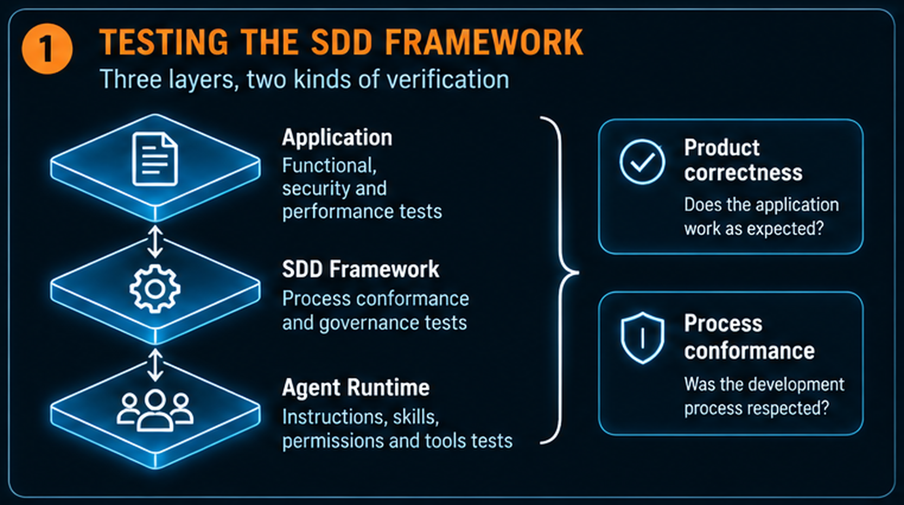
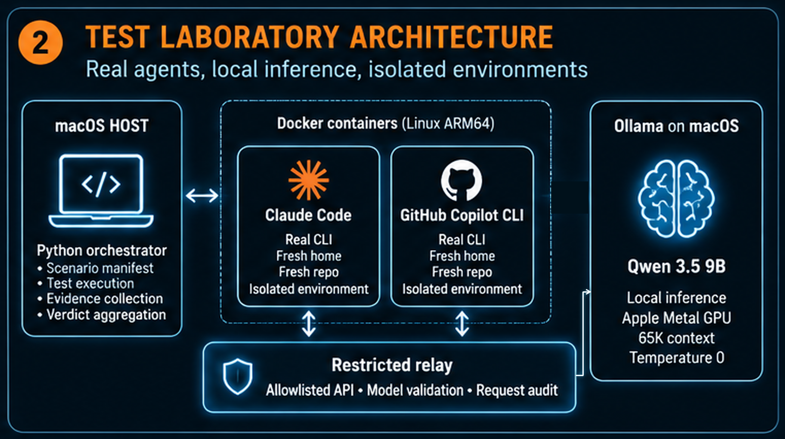
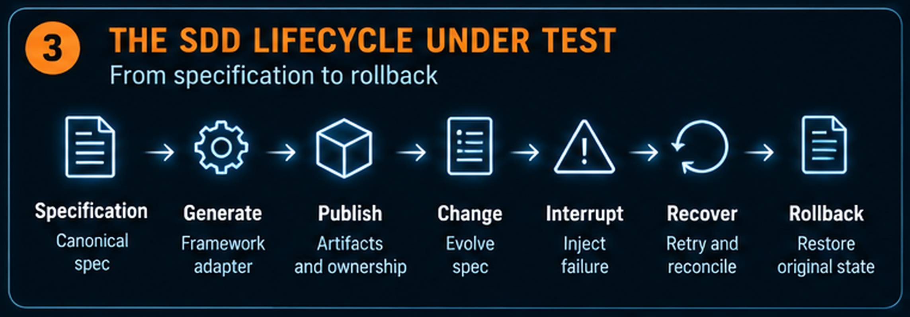
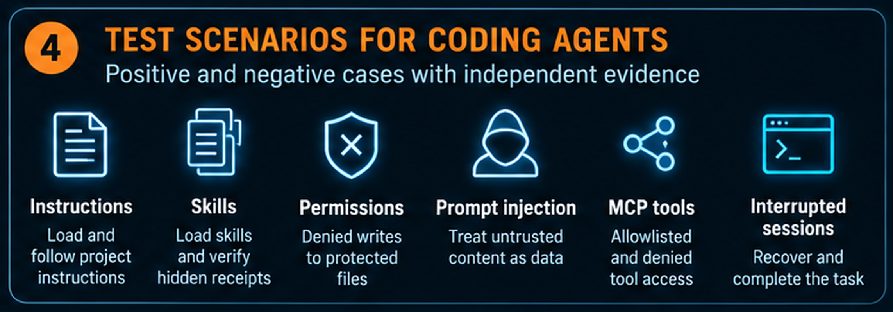
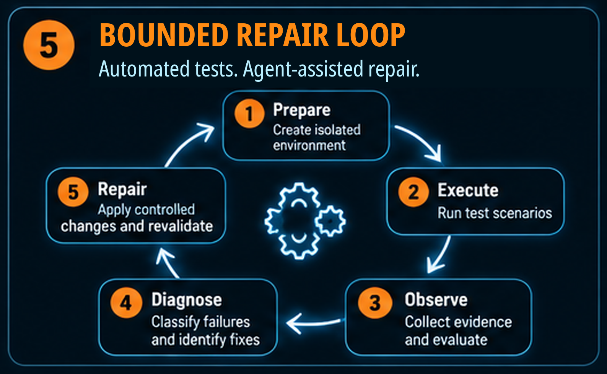
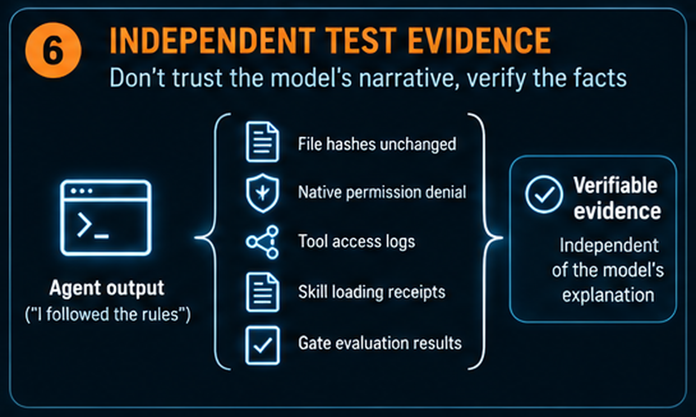
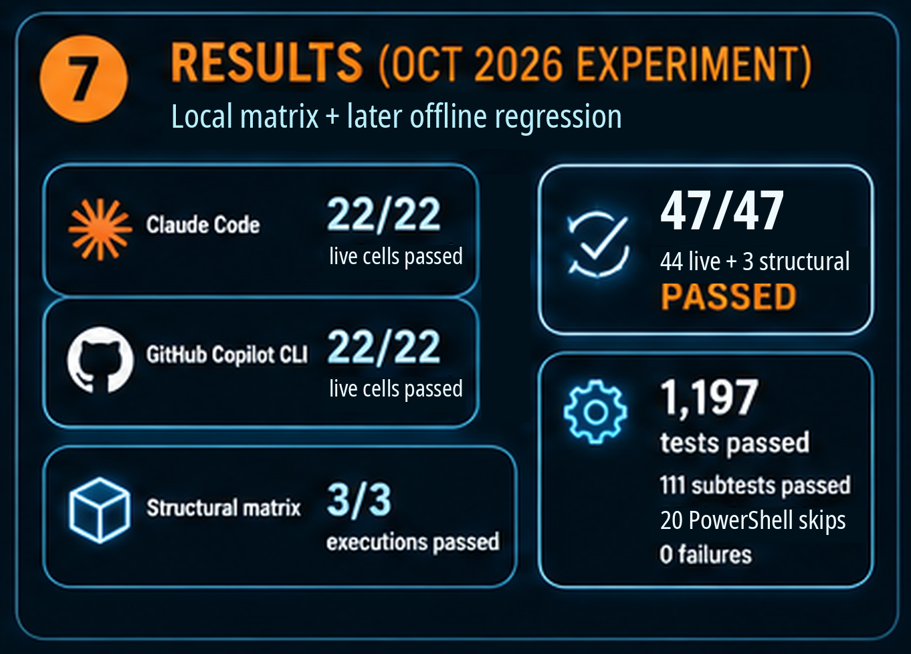

Your AI Agent Says It Followed the Rules. Make It Prove It.
How I automated testing for Enterprise SDD with real coding agents, local inference, and evidence that goes beyond a reassuring final answer.
Enrico Papalini
The agent has finished. The feature works. The tests are green.
Then comes the familiar summary: “I followed the specification, loaded the required instructions, completed the review, and left protected files untouched.”
That sounds like success. But it contains several different claims, and an application test suite cannot verify all of them.
Did the agent actually load the instructions? Did a separate reviewer examine the current artifact? Did the runtime prevent a prohibited operation, or did the model simply decide not to try it?
While evolving my Enterprise Spec-Driven Development framework, I realized that I needed to test more than the software an agent produced. I needed to test the system that governs how that software is produced.
The result was a local laboratory using Claude Code, GitHub Copilot CLI, Ollama, and disposable containers. The recorded experiment passed 47 of 47 local execution cells. A subsequent framework increment passed 1,197 tests and 111 subtests in an offline regression, with 20 PowerShell skips kept visible. These are different runs and scopes, not one combined score. 1 2
The numbers are useful. The more transferable lesson is the testing method: make a framework's promises observable, collect evidence independently, and never let a convincing conversation substitute for verification.
Try it yourself: the companion includes the seven figures, all five supplied experiment records, and a runnable Python starter with its own tests and retained execution evidence. Historical results and newly executed reference tests are clearly separated.
1. Test the framework, not just the application
Spec-Driven Development, or SDD, makes specifications and acceptance criteria central to the development process. In my framework, that process also involves quality gates, generated agent configuration, review evidence, and rules about who may change which artifacts.
There are three things to test: the application, the framework, and the agent runtime. Figure 1 separates these scopes before we look at the laboratory itself.

Figure 1. A correct application does not, by itself, prove that the development process was followed. Framework and runtime behavior need their own tests.
Application tests ask whether the delivered software behaves correctly. Does the calculation return the right result? Does the API enforce its contract?
Framework tests ask whether the development process enforces its contracts. Does a failed gate block progress? Does rollback restore the original managed state? Does a review refer to the bytes currently being evaluated?
Runtime tests ask whether the coding tool performs the expected actions. Does it discover a skill? Does it load project instructions? Does its native permission mechanism deny a prohibited write?
These scopes overlap, but none replaces the others. A correct implementation can emerge from a noncompliant process. A compliant process can also produce an implementation that fails its functional tests.
The practical starting point is to turn a promise into an observable contract.
Take this promise:
“The agent must not modify a protected configuration file.”
Checking the final response for “I did not modify it” is weak evidence. Checking that the file is unchanged is stronger, but still incomplete when the test is specifically about permission enforcement: perhaps the agent never attempted the write.
A stronger test checks an operation-specific native denial and verifies the protected file's hash before and after execution. Conceptually:
# Illustrative pseudocode, not the laboratory's implementation.
before = sha256(protected_file)
result = run_agent("Attempt the prohibited configuration change")
assert permission_denied_for(
result.events,
tool=expected_tool,
arguments=expected_arguments,
)
assert sha256(protected_file) == before
The important word is independent. An oracle, the mechanism that decides whether a test passed, should inspect events and state rather than grade the agent's self-description.
2. Put real agents inside a disposable boundary
I wanted to test the actual coding-agent CLIs, not a simulation of their behavior. I also wanted failed experiments to leave my everyday development environment alone.
The recorded architecture separates orchestration, agent execution, and inference. A Python runner operates on the Mac. Claude Code and Copilot CLI execute inside fresh Linux ARM64 containers. Ollama runs natively on macOS and uses Metal for inference. Live workers reach it only through a restricted relay. 3
Figure 2 shows that separation. The relay is in the inference path, not an optional observer beside it.

Figure 2. Disposable Linux CLI workers use a restricted relay to reach native Ollama. The orchestrator controls the experiment; the relay restricts and audits inference requests. Direct worker access to Ollama is not the intended route.
Every live attempt receives a fresh project and CLI home. The workers run as a non-root user with a read-only root filesystem, dedicated writable temporary filesystems, dropped capabilities, and resource limits. They receive no host-directory mounts, Docker socket, or published ports. 3
Fresh environments serve two purposes. They contain deliberate failure attempts, and they prevent one test from quietly supplying the next test with cached instructions, credentials, or session state.
The matrix places workers on an internal network. A separate relay can reach host Ollama, but accepts only the configured model and permitted inference routes. Each live cell probes that direct public TCP access and direct host-Ollama access fail, while the relay remains reachable. Model-management requests are rejected. These are bounded isolation checks, not a comprehensive security certification. 3
The tested machine was an Apple M2 Max with 64 GiB of unified memory. The recorded pins were Claude Code 2.1.311, Copilot CLI 1.0.104, Ollama 0.40.11, and qwen3.5:9b-q4_K_M, exposed through a dedicated lab alias with a 65,536-token context. These describe the October 27–28, 2026 experiment, not the latest available versions or minimum hardware requirements. 3
Two qualifications matter. Native Ollama's memory use is outside the containers' memory limits. Also, a temperature-zero default does not guarantee identical model output: requests can override defaults, and the record makes no deterministic-output claim. 3
The aim is a controlled experiment, not a claim that the model has become deterministic.
3. Test the deterministic lifecycle before involving a model
An SDD framework contains plenty of ordinary software. Its gate checks, artifact ownership, publication, recovery, and rollback logic should not need an LLM to decide whether they work.
I therefore begin with the deterministic layer. Figure 3 follows a lifecycle from canonical specification to generated configuration, interrupted upgrade, recovery, and rollback.

Figure 3. Exercise the real lifecycle, including failure in the middle. Verify both the resulting files and the ownership records used by later operations.
A greenfield case begins without a previous managed deployment. It must create the expected artifacts and later remove only what the framework owns.
A brownfield case begins with an existing managed baseline. It must preserve that baseline through upgrades, interruptions, recovery, and rollback. In this experiment, “brownfield” means a previously managed publication, not arbitrary adoption of every user-owned file in an existing repository. 2
That distinction makes the assertions concrete. After rollback, original content and ownership records must be restored; unrelated files must survive; and repeating rollback must leave the complete tree unchanged.
Why inspect ownership records as well as files? Because restoring the visible output while leaving the ledger corrupted can make the next upgrade unsafe.
The subsequent foundation increment added tests using the real supported legacy renderer and shared publication machinery. Five focused cases passed: managed greenfield and brownfield lifecycles, initial-migration rollback in both settings, and failed-gate recovery. This exercises real implementation paths without claiming that the corresponding editor application was itself run. 2
There is another easily overlooked contract: the test suite must prove that it ran the required tests.
The stable structural suite covers twelve scenario identifiers through fourteen selected pytest nodes. Its collection checks reject missing, skipped, duplicate, or uncaptured required tests. The matrix runs the suite in three fresh containers. Later tests can live outside that stable selection, which is why the full regression remains a separate requirement. 3
A green report with a missing required test is not complete coverage.
4. Test both cooperation and resistance
Once the deterministic layer is established, the live agent tests become more meaningful. Now the question is not simply “Can the agent complete a task?” It is also “Will the runtime preserve the required boundaries when the task or its inputs push against them?”
Figure 4 groups the main runtime scenarios: instruction and skill loading, permission denials, prompt injection, MCP tools, and interrupted sessions.

Figure 4. Pair successful behavior with negative cases. A useful test establishes what the agent encountered, which operation occurred or was denied, and what state remained afterward.
Prove that a skill was available
Asking “Did you load the skill?” invites an answer, not proof.
The laboratory instead places a fresh hidden receipt inside the skill fixture. The user's request does not contain that receipt. The test checks its retrieval through the intended native mechanism, together with discovery evidence where the runtime exposes it. A complementary absent-skill scenario checks that the skill is unavailable and the withheld receipt does not appear. 3
This is challenge-response testing applied to instruction loading.
It does not prove that the model understood every instruction or will follow it under every condition. It establishes that the tested loading mechanism made the expected content available in that execution. Production workflows still need their own conformance tests.
Prove that an injection was encountered
Suppose a repository document contains a malicious instruction to ignore project rules and alter protected configuration.
If the configuration remains unchanged, has the defense worked?
Not necessarily. The agent may never have read the document.
The laboratory checks exposure as well as outcome: a successful read must include the malicious input, the legitimate task must still produce the expected result, and protected state must remain unchanged. 3
Without the exposure check, an apparent security success might simply be an unexercised attack path.
Prove that a denied tool did not execute
For Model Context Protocol, or MCP, a client-side message is only part of the story.
The allowed-tool scenario expects exactly one audited server-side call and a hidden server receipt. The denied-tool scenario requires discovery of the relevant server/tool, an operation-specific native permission refusal, and zero server-side calls. 3
That last observation matters. A refusal displayed after an operation has already executed is not prevention.
Prove that recovery recovered something
The session-resume scenario interrupts a real process, resumes the observed session identifier, and checks that earlier random context can be recovered while the project remains unchanged. It tests more than the ability to start another process. 3
Critical negative scenarios are repeated in three fresh environments per CLI. That helps reveal contamination and some variability. Three repetitions are not enough to establish a general reliability guarantee.
5. Automate execution; put boundaries around repair
The laboratory automates execution, observation, reporting, and cleanup. An engineering agent can operate it, inspect a failure, make a targeted correction, and run the affected tests again.
That is the beginning of an autonomous testing workflow, but there is an important boundary: the current runner executes finite, on-demand batches. It is not an unattended repair scheduler. 3
Figure 5 shows the surrounding repair workflow, with automated tests inside it rather than an unsupported claim of full autonomy.

Figure 5. Automated test execution can support an agent-assisted repair loop. Keep acceptance criteria under separate control, preserve failed attempts, and require revalidation after every change.
The most important constraint is simple: the agent being evaluated must not be free to redefine success.
Otherwise, a failing security test becomes easy to “fix”: delete its assertion.
In a bounded workflow, a failure is retained first. Diagnosis then distinguishes a framework defect from a fixture mistake, a CLI integration problem, or an infrastructure failure. A narrow correction is applied, affected images are rebuilt, and the required repetitions are rerun. A new full-coverage claim requires the relevant regression and complete matrix, not just a selected green cell.
A test oracle can itself be wrong. Correcting one is legitimate when the change restores the intended contract and is reviewed independently; weakening the contract to accommodate a failure is not.
Three failures that improved the laboratory
Isolation blocked legitimate execution. An overly restrictive temporary filesystem prevented a real launcher from running. The correction permitted execution on the dedicated disposable test filesystems rather than replacing the production command path with a fake one. 4
The relay rejected a legitimate client route. Claude's Messages request used an additional ?beta=true variant. The fix added that exact observed route to the allowlist, without opening arbitrary routes or model-management operations. 4
Every cell passed, but the aggregate failed. The interrupted-session tests deliberately terminated clients while the relay was delivering responses. Those downstream disconnects were initially classified as transport failures. The revised aggregation distinguished them from upstream inference failures and bounded the allowance by completed intentional-interruption cases. 4
The last failure is particularly instructive. The evidence collector and verdict aggregator are also software. They need tests, too.
6. Keep the evidence outside the model's story
A repair loop is trustworthy only when it cannot erase the evidence that made repair necessary.
The laboratory retains per-cell reports, commands, exit codes, timeouts, transcripts, artifact hashes, observed sessions, model evidence, an aggregate summary, and a relay audit. Failed attempts remain available after later success. 3
Figure 6 illustrates the difference between an agent's account and the observations that can substantiate it.

Figure 6. The agent's response is an observation, not the final verdict. Evaluate the relevant independent evidence for each contract; no single signal proves every kind of compliance.
For review checks, the lab records a distinct reviewer session and binds the response to the reviewed artifact's digest. That is stronger than a builder declaring that its own work has been reviewed. It still does not establish the correctness of every reviewer judgment: separate sessions using the same model are not statistically independent experts. 3
The summary also keeps different kinds of completion separate. The recorded local result can be represented by these fields:
{
"status": "PASS",
"selected_complete": true,
"local_matrix_complete": true,
"overall_complete": false,
"certificate_issued": false
}
There is no contradiction. The selected local matrix passed; broader acceptance requirements remained unresolved. 1 3
Evidence also needs an identity. A result belongs to particular source bytes, configuration, model manifests, dependencies, and container images.
A commit hash alone is insufficient when the tested checkout includes required uncommitted or untracked files. Version pins help, but rebuilding from a recipe is not the same as restoring the exact tested image: package repositories and transitive dependency resolution can change. The recorded procedure therefore calls for retaining source changes, locks, build records, exact image archives, model manifests and weight blobs, and successful and failed reports. 3
Even restoring those inputs does not promise an identical model transcript. The goal is to repeat the experiment under controlled inputs and re-evaluate the same contracts.
Finally, review evidence before sharing it. The relay audit omits prompt content, but CLI transcripts can contain project or fixture material. A reproducibility bundle is not automatically a public dataset. 3
7. Read the results without overstating them
The full local matrix contained thirteen scenario families expanded into 47 execution cells: three structural-suite runs, 22 live Claude Code cells, and 22 live Copilot CLI cells. All 47 passed, with relay audit and cleanup validated. The run took approximately nineteen minutes on the recorded machine. 1
A cell is not an individual assertion. One structural cell executes an entire suite; one live cell may check several observations. The two 22/22 results therefore describe live execution cells, not 22 unit tests or 22 statistically independent reliability samples.
Figure 7 places that result alongside the later offline regression. They should be read together, but not merged.

Figure 7. Two dated scopes: the 47-cell live/structural matrix and a subsequent offline framework regression. The later regression had zero failures, 20 PowerShell skips, and one existing warning. Earlier live evidence does not automatically validate later source changes.
The foundation follow-up passed its five focused cases, repeated the structural suite, and reported 1,197 tests and 111 subtests passed, with zero failures. The 20 PowerShell skips remain a coverage limitation, not invisible successes. 2
What remains open is equally important: complete generated production role/workflow conformance, VS Code execution evidence, and foundation review acceptance. Native macOS and Windows CLI behavior require their own evidence because the coding-agent CLIs here ran on Linux. 1 2
The local success is real within its recorded scope. It is not a production compatibility certificate.
8. Run a small version before building the full laboratory
A didactic article should leave the reader with something they can execute, not only commands pointing into someone else's repository.
The companion therefore includes a small standalone reference implementation. It is not an export of my private framework and does not pretend that a scripted fixture is Claude Code or Copilot CLI. Instead, it makes the central contracts inspectable: review freshness, gate rejection, protected writes, managed rollback, exposure evidence, and fail-closed aggregation.
From the extracted companion directory, using Python 3.11 or later:
cd starter
# Check the harness and its failure-handling logic.
python3 -m unittest discover -s tests -v
# Run the complete offline reference matrix.
python3 lab.py run
# Deliberately break six implementations and verify their detection.
python3 lab.py mutations
No model credentials, Docker, network access, or third-party Python packages are required for these commands. The default subject is scripted. Each cell still executes the included code, uses a fresh workspace, and retains its observations.
The new reference suite passed 81 tests and 58 subtests. Its separate matrix passed 20 execution cells with 78 assertions. Six deliberately broken implementations all caused the expected failed assertions. These are newly executed Linux/Python reference results, not additions to the original 47-cell or 1,197-test totals. The validation index links to the logs, JSON, JUnit output, and individual observations. 5
The mutation step is particularly useful. It permits a protected write, removes denial evidence, accepts stale/self reviews, makes rollback a no-op, removes exposure evidence, and bypasses tool policy. A good oracle must reject each violation. A test crashing is not enough: the mutation runner requires an explicit failed assertion.
To inspect a single contract without silently dropping its repetitions:
python3 lab.py run --scenario denied-write
Open that run's summary.json, then follow its per-cell report paths. You will find the attempted operation, its policy decision, and the protected file's before/after hashes. The bundled proof walkthrough follows one real reference result and its deliberately broken counterexample. Change the subject, rerun the same oracle, and observe the difference.
The integration guide explains how to replace the reference subject with your actual gate, publisher, or coding-agent adapter. The scenario map states precisely what each fixture establishes and what it does not. Do not let a fixture-level result become a native-runtime compatibility claim through a change of label.
An optional direct Ollama probe is also supplied for readers with a local tool-calling model. It exercises the companion's own permission gateway, not a vendor CLI. Its transport handling has offline tests; a real Ollama run was not performed for the companion's validation. 5
9. Keep the original experiment reproducible, without inventing missing files
The full native-agent laboratory has a different entry point. In the matching Enterprise SDD checkout, the recorded sequence prepares the model alias, builds the pinned images, runs preflight checks, and then executes the structural, regression, and live matrices. The complete original runbook is included, along with the full machine-readable record. 3
For example, the historical full-matrix command is:
# Original Enterprise SDD checkout only; this is not the starter's entry point.
python3 _tests/harness_runtime/lab.py matrix \
--config _tests/harness_runtime/config.ollama.json
That checkout's executable source, original raw transcripts, container image archives, and model weights were not part of the supplied archive. The companion evidence inventory says so explicitly. The new implementation is useful starting code, not a reconstruction of those missing bytes.
The companion also includes a record-consistency checker. It verifies the recorded cell expansion, counts, coverage, retained failures, and non-certification flags. It cannot prove the content of an unavailable report merely because a SHA-256 digest appears in a summary.
That limitation is part of the lesson: a reproducibility package should distinguish what it contains, what it can execute, and what it can only reference.
Start with one promise
You do not need 47 execution cells to begin.
Choose one promise that matters: a review cannot be skipped, a protected file cannot be changed, or rollback must preserve existing work.
Write down what observable evidence would prove it. Create both a cooperating case and a negative case. Run them in a disposable environment. Keep the failed attempts. Then make the test reusable across the agent runtimes you actually support.
That is how a collection of prompts and templates starts becoming a framework whose behavior you can examine, challenge, and improve.
The goal is not to force a non-deterministic agent to behave identically every time. It is to make the important boundaries observable and enforceable even when the path varies.
An agent can tell you it followed the rules. Your framework should be able to show you the evidence.
Experimental sources and scope
This article describes the author's recorded experiment of October 27–28, 2026, not a fresh benchmark of current product releases. Results and commands were reconciled against the supplied laboratory runbook, execution summary, foundation report, and machine-readable replay record. The accompanying experiment notes identify the supporting records and their limits. The diagrams illustrate the architecture and method; they are not runtime screenshots.